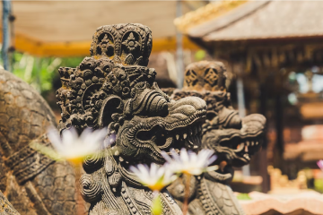
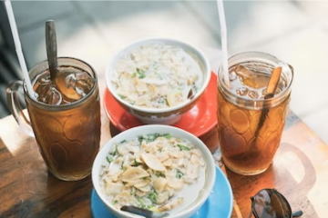
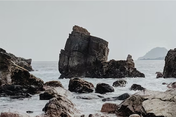
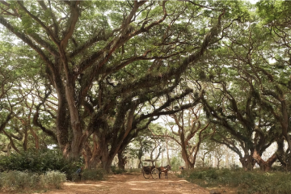

 Travel 29 Apr 2022 Seeing the beauty of Bali, which has statues in temples Talking about Bali is never boring to tell..
 Culinary 02 May 2022 Delicious and cheap Semarang food There's a lot of street food in Semarang..
 Travel 05 Jun 2022 Karang bebai beach Lampung for summer vacation Talking about Bali is never boring to tell..
 Travel 13 Jun 2022 The upside-down mystical forest in Banyuwangi This place is most often used as a photo..